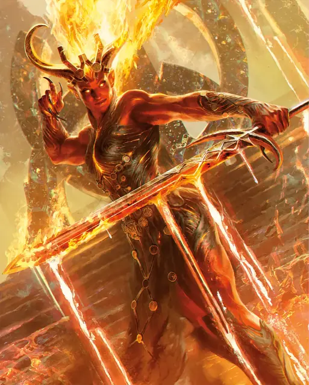

Ифрит
Efreeti
Большой Элементаль (Гений), Нейтральный

Класс Защиты 17 Инициатива +1 (11)
Хиты 212 (17к10 + 119)
Скорость 40 футов, Полёта 60 футов (парит)
| мод | спас | ||
|---|---|---|---|
| СИЛ | 22 | +6 | +6 |
| ЛОВ | 12 | +1 | +1 |
| ТЕЛ | 24 | +7 | +7 |
| мод | спас | ||
|---|---|---|---|
| ИНТ | 16 | +3 | +3 |
| МДР | 15 | +2 | +6 |
| ХАР | 19 | +4 | +8 |
Иммунитеты Огонь
Чувства Тёмное зрение 120 футов, пассивное Восприятие 12
Языки Первичный (Игнан)
Опасность 11 (7 200 опыта; БВ +4)
Особенности
Восстановление элементаля. Когда ифрит умирает за пределами Стихийного плана Огня, его тело превращается впрах и спустя 1к4 дня заново возрождается со всеми Хитами где-то на плане Огня.
Сопротивление магии. Ифрит совершает с Преимуществом спасброски от заклинаний и прочих магических эффектов.
Желания. Ифриту с 30-процентным шансом известно заклинание Желание. Если оно известно ифриту, он может сотворить заклинание только от имени другого существа (кроме гениев), если то сообщит ему желание понятным для ифрита способом. Сотворение Желания таким образом не накладывает на ифрита негативные эффекты, указанные в последнем параграфе описания заклинания. После того, как ифрит сотворит это заклинание три раза, он не может сделать это снова, пока не истечёт 365 дней.
Действия
Мультиатака. Ифрит совершает три атаки Раскалённым клинком или Метанием пламени в любой комбинации.
Раскалённый клинок. Бросок рукопашной атаки: +10, досягаемость 5 фт. Попадание: 13 (2к6 + 6) Рубящего урона плюс 13 (2к12) урона Огнём.
Метание пламени. Бросок дальнобойной атаки: +8, дистанция 120 фт. Попадание: 24 (7к6) урона Огнём.
Сотворение заклинаний. Ифрит сотворяет одно из следующих заклинаний, не нуждаясь в Материальных компонентах (заклинательная характеристика — Харизма, Сл спасброска заклинаний 16):
Неограниченно: Обнаружение магии, Элементализм
1/день каждое: Газообразная форма, Невидимость, Образ, Огненная стена, версия 7-го уровня, Планарный переход, Языки
Бонус мастерства +4
Среда обитания Пустыня, Стихийный план Огня
Сокровища Оружейные
Ифрит
Гений огня
Ифриты — воплощение энергии и непредсказуемости огня. Благодаря своей врождённой магии они способны создавать пламя из пустоты и сокровища в волшебных огненных вихрях. За многими ифритами закрепилась дурная слава: их переменчивая натура и любовь к грандиозным пожарам часто приводят к разрушениям. Однако даже среди них встречаются поклонники красоты огня, пленённые изяществом пламени свечи и восхищающиеся взрывами фейерверков. Эти гении часто готовы помочь смертным в обмен на сокровище или освобождение пленных Элементалей.
Во многих мирах ифриты обитают в знойных пустынях и регионах с действующими вулканами, а те из них, кто селятся на Стихийном плане Огня, возводят среди океанов пламени и расплавленных горных пород изумительные города. Среди всех этих поселений выделяется легендарный Латунный город — блестящий мегаполис, одно из величайших чудес мультивселенной. Благодаря магии, смягчающей экстремальную жару, это место стало центром торговли между планами бытия.